ヘッドウォータースのフィード
https://zenn.dev/p/headwaters
株式会社ヘッドウォータースのテックブログです。 AIエージェント、生成AI、LLM、Azureのサービスや資格、IoT、XR系などData&AIとApp modernizeに関して幅広く投稿します！
フィード
Foundry Localをさわってみた
ヘッドウォータースのフィード
きっかけ公開されてから1か月たちますが、WindowsのローカルPCでカンタンにエッジAIを動かせられるとのことで、興味がでたのでさわってみました。 インストール方法PowerShellで以下を実行するだけwinget install Microsoft.FoundryLocal アーキテクチャFoundry Local サービスの特徴として、推論エンジンを操作するための標準インターフェイスを提供する OpenAI 互換の REST サーバーが含まれており、 Foundry Local SDKを使用してアプリケーションと連携させたり、HTTP経由でモデルを実行するこ...
3日前
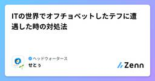
ITの世界でオフチョベットしたテフに遭遇した時の対処法
ヘッドウォータースのフィード
はじめに「オフチョベットしたテフをマブガッドしてリットにしておいて！」おふちょ…？IT関連のサービスに携わる中では、こんな瞬間が何度もあります。横文字・略語・技術用語・業界独特の言い回し、その単語の意味がわからないだけで、思考が止まり会話に入れなかったこと、みなさんも新人の頃はご経験ないでしょうか。本記事では“オフチョベットしたテフ”のような用語に出会ったとき、どう考え、どう行動すべきかを主観で書いてみます。 1. わからないを自覚する❓「まぁ文脈的にテフってなんかの原材料のことじゃない？」❓「リットはなんか聞いたことあるし、一旦問題ないだろう」最初からあ...
3日前
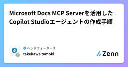
Microsoft Docs MCP Serverを活用したCopilot Studioエージェントの作成手順
ヘッドウォータースのフィード
執筆日2025/6/26 やることCopilot Studioのカスタムコネクタを使ってMicrosoft DocsのMCPサーバーに接続します。それを情報源とするエージェントをCopilot Studioで開発します。 用意するものYAMLswagger: '2.0'info: title: MCP Server for Microsoft Docs description: Microsoft DocsのMCPサーバーです。 version: 1.0.0host: learn.microsoft.combasePath: /apischem...
4日前
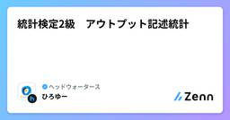
統計検定2級 アウトプット記述統計
ヘッドウォータースのフィード
目的統計検定2級の映像授業と書籍内容を書き出す 記述統計 変数の分類質的変数名義尺度意味：同じ値かどうか例：性別、職業、出身地順序尺度意味：値の大小関係例：ランク評価、満足度量的変数間隔尺度意味：値の差の大きさ例：気温比例尺度意味：値の比例：長さ、重さ、価格 中心と散らばりの指標(量的変数)平均(中心指標)\bar{x} = \frac{1}{n} \sum_{i=1}^{n} x_i!外れ値、データの偏りに注意分散・標準偏差(散らばり指標)分散s^2 = \frac{1}{n} ...
5日前
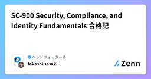
SC-900 Security, Compliance, and Identity Fundamentals 合格記 1
1
ヘッドウォータースのフィード
受験の動機AZ-500：Azure セキュリティエンジニア アソシエイトを取得済みなのですが、Azureのセキュリティ技術に限定されており、M365を含めたMicrosoft全体的なセキュリティの概要を掴んでおきたく受験しました。これから受験される方の参考になれば幸いです。 SC-900とはhttps://learn.microsoft.com/ja-jp/credentials/certifications/security-compliance-and-identity-fundamentals/?source=recommendations&practice-...
5日前
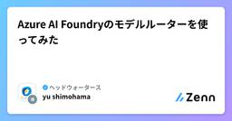
Azure AI Foundryのモデルルーターを使ってみた
ヘッドウォータースのフィード
執筆のきっかけ業務で、RAGシステムの構築をしているのですが、クエリ拡張（ユーザーの質問文をLLMが理解できるように補足する）に最適な軽量なモデルを探していました。ちょうどそのタイミングでAzure OpenAIのアップデートで多様なユースケースに適したLLMを選択してくれる『モデルルーター』というものがあるとのことだったので、さっそく使ってみました。 モデルルーターとは？公式いわく、モデルルーター自体がLLMモデルであり、GPT-4 のような単一の基本モデルを使用する場合と同様に、Completions API を使用してモデル ルーターにアクセスできるとのこと。htt...
5日前

IT初心者でもわかる！モックの基本と活用方法
ヘッドウォータースのフィード
初めにこんにちは！新卒2年目の矢野です！この記事では、IT初心者でも理解しやすいように、「モック(Mock)」という便利なツールについて解説します。モックは、プログラミングの学習やチーム開発でとても役立つ考え方です。具体的な使い方や実例を交えながら紹介していきます。 1. モック(Mock)とは？モックとは、プログラムの中で**「本物の代わりに使う偽物の機能」**のことです。例えば、外部サービスやデータベースがまだ完成していないとき、その部分を「モック」として作ることで、他の部分の開発やテストを進められます。イメージ： モックは映画のセットのようなものです。実際に背景や...
5日前
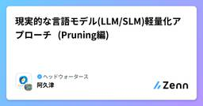
現実的な言語モデル(LLM/SLM)軽量化アプローチ (Pruning編)
ヘッドウォータースのフィード
LLM/SLM初学者です。現実的な言語モデル(LLM/SLM)の軽量化アプローチをまとめます。様々なPruning手法が論文として提案されているかと思います。しかし、モデルのリリースが高頻度で行われる昨今において、コストを掛けて高度なPruning手法を実装している最中により小型で高性能なモデルが新しく登場してしまい、結局はそれを利用した方が容易に軽量化が図れてしまうというのが現実かと思います。そこで、本記事では実装コストを顧みつつ、「理論上は、〜」ではなく、「実際のところは、〜」を徒然と書いていきます。 Pruningの大別Efficient Large Langua...
5日前
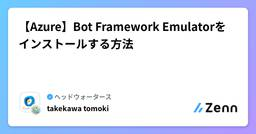
【Azure】Bot Framework Emulatorをインストールする方法
ヘッドウォータースのフィード
執筆日20205/6/25 前提windwos 11 手順以下のURLをクリックするhttps://github.com/microsoft/BotFramework-Emulator/releasesBotFramework-Emulator-4.15.1-windows-setup.exeをクリックするどちらか選択し、次へをクリックするインストールをクリックする完了(F) をクリックするインストールが完了したことを確認する
5日前
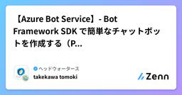
【Azure Bot Service】- Bot Framework SDK で簡単なチャットボットを作成する（Python）
ヘッドウォータースのフィード
執筆日2025/6/25 Bot Framework を使ったBotの作成手順 1. 仮想環境の作成python -m venv .venv.venv\Scripts\activate 2. 必要なライブラリのインストールpip install botbuilder-corepip install asynciopip install aiohttppip install cookiecutter==1.7.0cookiecutter https://github.com/microsoft/BotBuilder-Samples/releases/do...
5日前
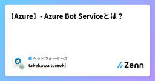
【Azure】- Azure Bot Serviceとは？
ヘッドウォータースのフィード
執筆日2025/6/25 Azure Bot Serviceとは？Microsoft Azureが提供するボットを構築するための統合開発環境です。ユーザが簡単にチャットボットを作成、構築、デプロイ、管理することができます。 主な特徴チャットボットの作成各種SDK（C#、JavaScript、Python、Javaなど）を使い、柔軟に開発可能。https://learn.microsoft.com/en-us/python/api/overview/azure/bot-service?view=azure-pythonBot Framework Comp...
5日前
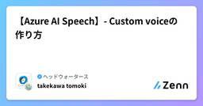
【Azure AI Speech】- Custom voiceの作り方
ヘッドウォータースのフィード
執筆日2025/6/25 ざっくり手順Azure AI Speechをデプロイモデルを学習モデルのデプロイ 1. Azure AI SpeechをデプロイAzure Portalを開くAI Foundry>音声サービスをクリックする+作成をクリックする価格レベル:S0でデプロイする!FreeだとCustom voiceの作成ができないhttps://azure.microsoft.com/ja-jp/pricing/details/cognitive-services/speech-services/ 2. Azure ...
5日前
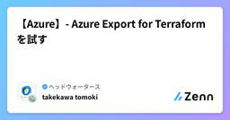
【Azure】- Azure Export for Terraformを試す
ヘッドウォータースのフィード
執筆日2025/6/25 Azure Export for Terraform2025年5月1日、Azure PortalにTerraformのExport機能がパブリックプレビューとして登場しました。他にもエクスポートできるツールがないか探していたところ、Azure Export for Terraformを見つけました。実際にどのようなものか検証してみました。https://zenn.dev/headwaters/articles/d5ee93eb1bf166 Azure Export for Terraformとは？Azure Export for Terra...
5日前
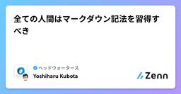
全ての人間はマークダウン記法を習得すべき 1
ヘッドウォータースのフィード
本記事の主張開発者に限らず大半の人間が LLM を活用する時代が来つつあるLLM の業務活用はもはや必須プロンプトは基本的に Markdown で記述すべきただし、出力フォーマットを厳密に指定したいなど一部のケースでは、XML や YAML や JSON 等を用いる場合もあるLLM を有効活用するために、開発者以外の職種の人間も Markdown を習得すべきプロンプトだけでなくドキュメントも可能な範囲内で Markdown 等のプレーンテキストで記述した方がよい 理由インターネット上には Markdown のドキュメントが多数存在しており、LLM の学...
6日前
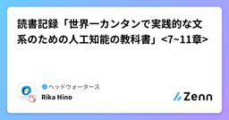
読書記録「世界一カンタンで実践的な文系のための人工知能の教科書」<7~11章>
ヘッドウォータースのフィード
概要書籍「世界一カンタンで実践的な文系のための人工知能の教科書」の読書記録である第1章から第11章までのうち、第7章から第11章までをまとめる 第7章:これからのAIはどうなる？ AIが感情を持つようになるって本当ですか？感情は社会的交流(身振りや手振りなどの身体的会話や、人間のような言語を用いた会話など)の中で生まれる。そのため、AIにも「感情らしきもの」を空想することはできるが、確かめられない。感情や意識を持つうえで重要な「複雑さ」は3つあり、人間が一般的に推測する高度な感情を持つ生き物は社会性が高い。AIは自律性や社会性が低いが、社会性を持ったAIの研究が進めら...
6日前
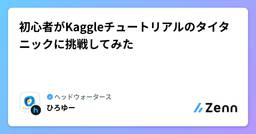
初心者がKaggleチュートリアルのタイタニックに挑戦してみた
ヘッドウォータースのフィード
挑戦の背景と今回の目的背景機械学習・AIエンジニアになりたい！目的機械学習の一連の流れをハンズオン形式で学ぶとにかく1回提出してみる 今回利用したデータセットタイタニック事故の乗客データと事故での生死がcsv形式で与えられている。訓練データとテストデータが最初から与えられているため、データを分割する必要はない。https://www.kaggle.com/competitions/titanic 実際に分析全体の流れを整理する。特徴量作成データの読み込みと構造把握データの前処理EDA新たな特徴量作成・変更モデルの作成ハ...
8日前

Though this be madness, yet there are method in't.奇異に見えるかもしれないが戦略があるのだ
ヘッドウォータースのフィード
今回はゲームのAIについて焦点をあてて人工知能学会に参加してきた話をします。https://www.headwaters.co.jp/news/hws_di_jsai2025.htmlタイトルはシェースクピアのハムレットの中のセリフです。ハムレットの奇行に対して、ポローニアスが感じた違和感を表現したセリフです。日本語訳としては「狂気に思えるかもしれないがここには戦略があるのだ」という感じです。研究分野でゲーム開発を効率化することや、AIでもっと面白くする試みがなされています。ゲーム・キャラクタ・コンテンツの研究というと、すこし色物感を感じる人もいるかもしれませんが、ゲーム・コ...
10日前
AppService証明書をKeyVaultに格納する際に詰っているあなたに伝えたい
ヘッドウォータースのフィード
執筆日2025/6/20 起きている事象AppService証明書をKeyVaultに格納しようとすると、以下のエラーが.. 結論KeyVaultのコンテナーのアクセスポリシーの適用が必要 補足Key Vaultには、RBACとアクセスポリシーの2つがあります。詳細は以下をご覧ください。https://zenn.dev/headwaters/articles/2960efcf1ad73e
10日前
Databricksで頑張るAIエージェント入門
ヘッドウォータースのフィード
1. DatabricksでAIエージェントを作ってみたい 「Agent Bricks」とやらが発表された！…けど絶賛Databricks勉強中のせっとです。実際に触ったり情報集めたりとしているのですが、先週のサミットで以下の発表がありました。https://www.databricks.com/company/newsroom/press-releases/databricks-launches-agent-bricks-new-approach-building-ai-agents?utm_source=chatgpt.com私もまだ理解が追い付いていない箇所がたく...
10日前
2025年のLLMエージェントのサーベイ論文を読んでみた：後編
ヘッドウォータースのフィード
本記事で扱う内容今回は2025年3月に発表された論文2025年3月に発表された論文「Large Language Model Agent: A Survey on Methodology, Applications and Challenges」の後編ということで、『現実世界の課題』と『LLMエージェントの応用』についてご紹介いたします。 現実世界の課題 エージェント中心のセキュリティ：進化するAIに潜む脅威と防御LLMエージェントが高度化するにつれ、セキュリティリスクも複雑化しています。本セクションでは、エージェントモデル自体を標的とする攻撃と、それに対する防御策を4つ...
11日前